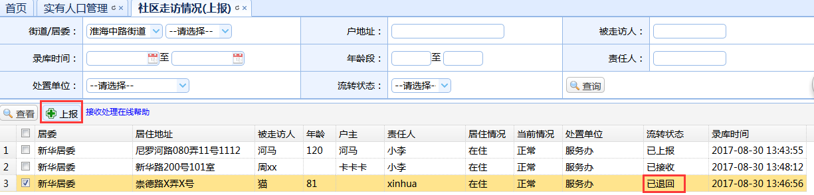
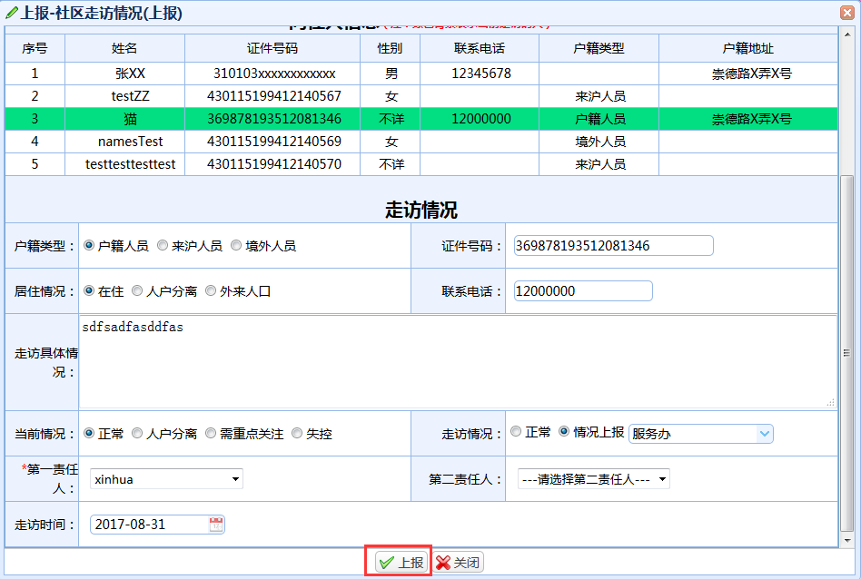
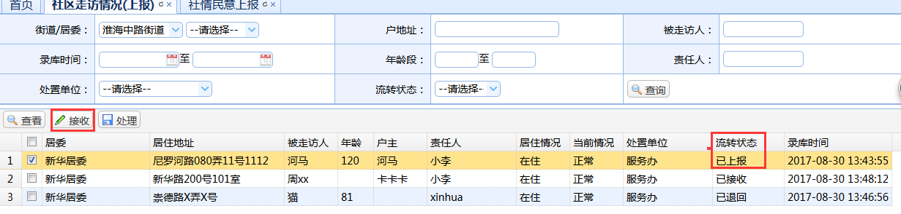
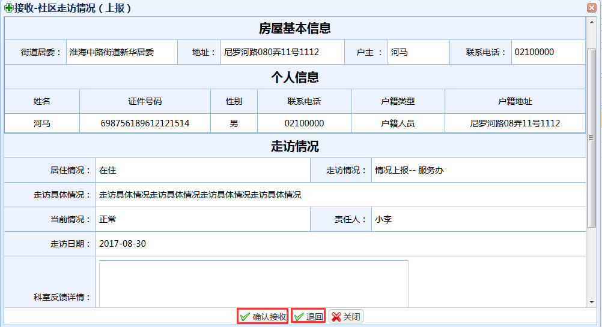
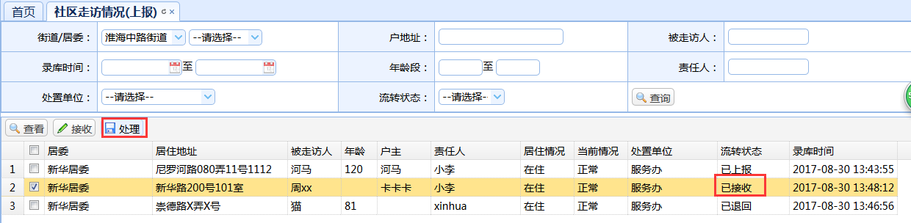
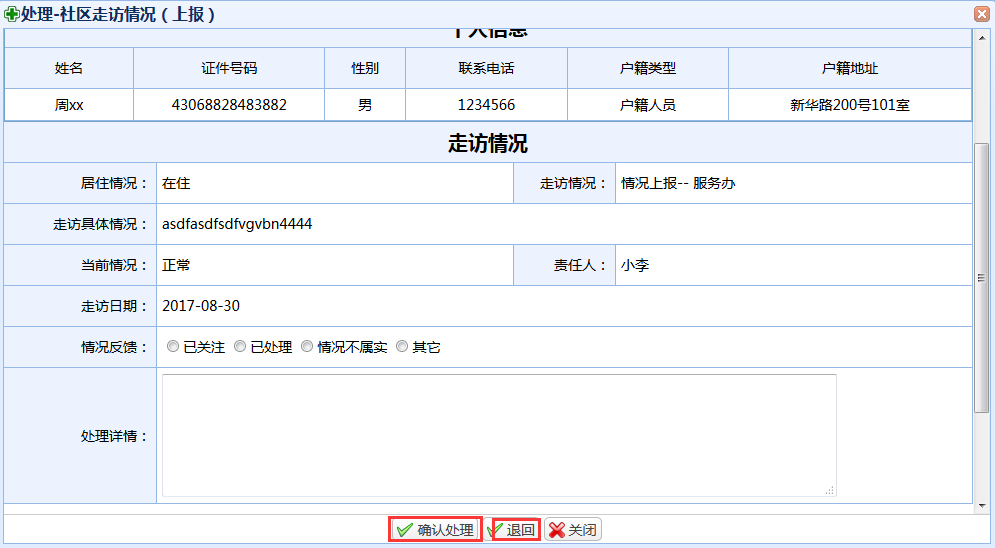

操作指南：
1、上报：这里的上报是针对已退回数据的再次上报所用，选中一条流转状态为已退回的数据，点击上报按钮，随后会跳出上报信息编辑的页面；   信息填写完成后，点击上报按钮进行上报，操作完成返回列表页面
2、接收/退回：选中一条流转状态为已上报的数据，点击接收按钮，随后会跳出确认接收/退回的页面；   填写科室反馈详情后，点击确认接收按钮进行接收、点击退回按钮进行退回，操作完成返回列表页面。
3、处理/退回：选中一条流转状态为已接收的数据，点击处理按钮，随后会跳出确认处理/退回的页面；   选择情况反馈并填写处理详情后，点击确认处理按钮进行处理、点击退回按钮进行退回，操作完成返回列表页面。